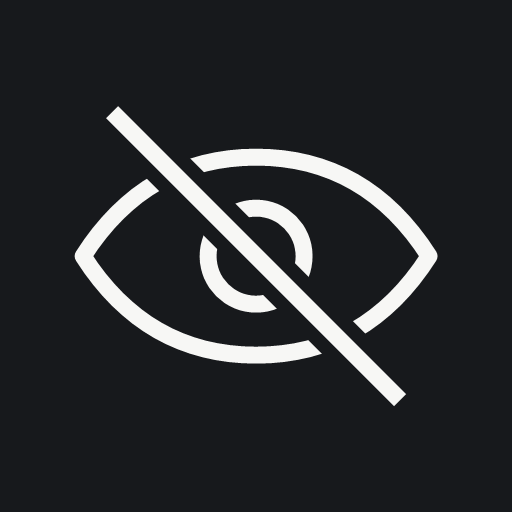

192 px64 px32 px
Current
Eye-off badge
Recognizable, but the circle wastes space and the heavy black slash overwhelms the mark.

64
32
Recommended · A
Eye-off on ink
The preferred mark on a nearly black canvas. High contrast without the softer gray appearance of the previous version.
Option B
Eye-off on paper
The same mark reversed onto a warm off-white canvas. Less severe, while remaining plain and mostly colorless.
Option C
stroke="#ffffff"
Plain eye-off
Keeps the familiar visibility metaphor, stripped down to a gray square and a single white line icon.